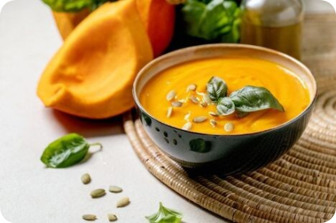

Sup Labu
Mudah 20 Menit
Bahan-bahan
- 2 kg labu
- 1 jari jahe
- 1 lembar kembang tahu manis
- Garam dan penyedap rasa jamur
- Gula secukupnya
- Air secukupnya
Cara Membuat
- Potong labu menjadi dadu.
- Iris tipis jahe.
- Kembang tahu digunting lalu di goreng dan tiriskan.
- Minyak bekas kembang tahu bisa dipakai untuk goreng jahe.
- Tumis jahe sampai kuning.
- Masukan labu ke dalam wajan dan tambahkan air.
- Masukan kembang tahu lalu oseng-oseng, beri garam dan penyedap rasa secukupnya.
- Tambahkan gula secukupnya.
- Sup labu siap dihidangkan.
|